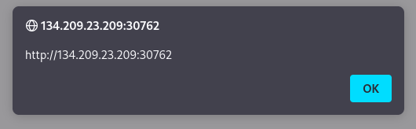

Determine vulnerable form of the webpage
Many
modern web applications utilize cross-domain IFrames to handle user input, so that even if the web form is vulnerable to XSS, it would not be a vulnerability on the main web application.
This is why we are showing the value of
window.origin in the alert box, instead of a static value like 1.
With
window.origin the alert box would reveal the URL it is being executed on, and will confirm which form is the vulnerable one, in case an IFrame was being used.
Example: <script>alert(
window.origin)</script>
